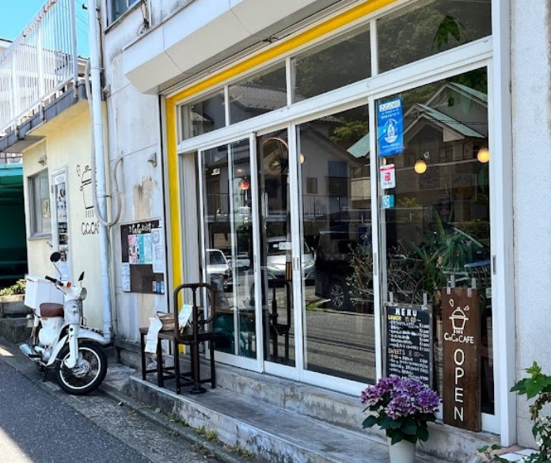

Aboutお店について
横須賀市のオーガニックカフェ
神奈川県横須賀市のオーガニックカフェです。
当店では野菜中心のお食事メニュー、オーガニック食材量り売りを提供しております。
出来る限り無農薬の地場野菜を使用し、お身体に嬉しい野菜中心の家庭料理を提供しております。
＊化学調味料・添加物不使用、完全グルテンフリーメニュー
＊酵素玄米
＊小麦、乳製品、卵アレルギー対応スイーツ
＊ヴィーガン対応
Styleお店のスタイル
当店ではみなさまの過ごしやすい〇〇な空間を提供いたします。※例文

お店の外観
お店の内装
Dogs are OK !ワンちゃんもお越しください
当店はワンちゃんの入店OKとなります。
ドックカフェを併設していますの大切なパートナーとご一緒にご来店いただけます。 皆様のお越しをお待ちしてます。
当店オーナーのMISAとミッキー